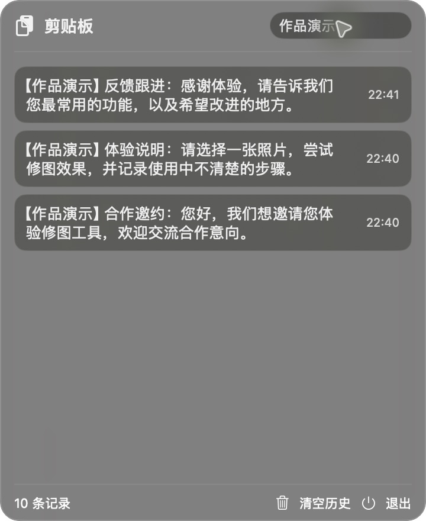

macOS 菜单栏工具 · 个人开发演示版
常用文字和图片，
找回，再次复制。
在达人合作沟通中，我经常需要反复调用固定话术。因此借助 AI 编程制作了这个自用剪贴板工具，把分散的复制内容集中保存和查找。
版本 1.0 · Apple 芯片（M 系列）· macOS 14 及以上
本包是个人编译版本，尚未通过 Apple 公证。请先确认来源；如系统阻止打开，请按 macOS 提示处理。

围绕重复操作，做几个实用功能
文字与图片历史
自动记录复制过的文字与图片，点击记录即可重新复制，再到目标应用粘贴。
文字搜索与置顶
按关键词查找文字历史，将常用内容置顶，减少来回查找固定话术的操作。
本地保存与去重
历史保存在本机；支持去重、删除记录，清空普通历史时保留置顶内容。
使用方式
01 / 打开应用
解压，放入应用程序
打开 ClipboardBar.app 后，点击 Mac 顶部菜单栏的剪贴板图标。
02 / 复制素材
按平时的方式复制
复制文字或图片，应用会记录历史；可搜索文字并置顶常用条目。
03 / 再次调用
点击记录，然后粘贴
点击需要的记录重新复制，到目标应用中按 ⌘V 粘贴。
这件作品的起点与现状
起点是我在达人合作工作中遇到的重复复制粘贴问题。我从自己的工作流程出发，借助 AI 辅助编程完成可运行的 Mac 应用，并用于个人日常操作。
- 当前为自用工具和作品演示，尚无外部用户规模或效率提升的统计数据。
- 安装包仅含应用及说明，不含我的剪贴板历史、工作话术或图片库。
- 此版本适用于 Apple 芯片的 Mac，暂不支持 Intel Mac 或 Windows。